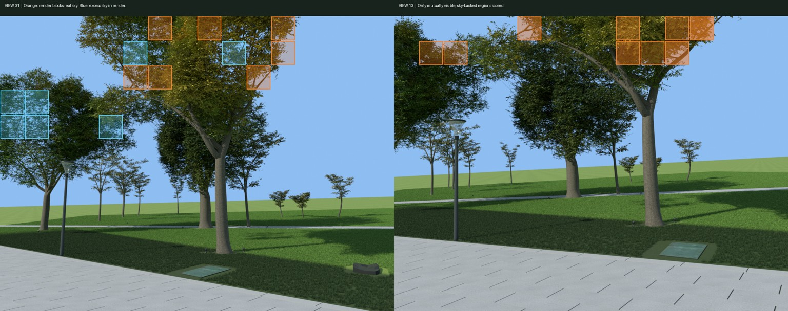

云谷草坪 · 账号调用与额度
R3 初次分工
正在读取本批调用回执…
- 五账号同时请求
- 秒
- 首个请求到最后返回
- 秒
- 五次请求时长合计
- 账号秒
各账号的请求
| 账号与分工 | 请求数 | 开始 | 返回 | 时长（秒） | 输入 token | 输出 token | 其中推理 |
|---|
账号编号来自 GPT-Load 的匿名凭据记录。各次时长包含等待上游响应的时间。每个账号根据采集文字和数值返回一份研究规格，共五份。
本批消耗了多少订阅额度？
上游按账号汇总七天内的所有用量。这五次请求能核对 token，现有读数无法单独算出它们消耗的订阅额度百分点。
另一次观测 · 七天剩余额度
正在读取额度快照…
| 匿名账号 | 读取时间（北京时间） | 七天剩余 |
|---|
每行是上游返回的账号整体额度。显示为 100% 的账号在上表中也有成功请求。
本次接力（不含 R3 初次分工的五笔请求）
正在核对后续请求…
| 账号 | 成功请求 | 输出 token | 参与阶段 |
|---|
查看逐笔请求与前置任务
21:08–21:09（北京时间）再次读取七天额度：#1、#2 均剩 100%，#4、#5 均剩 97%。#3 刷新返回 502，最近保存值为 25%，不能当作本次刷新结果。这些是账号总额度。逐个查看观测时间
实拍对照：树冠哪里太密或太稀
三株树、两个相机位，共有 73 块区域能与实拍对照。橙色表示模型挡住了实拍中的天空，蓝色表示模型比实拍稀疏。


候选只调整叶片宽度，叶片基点和原有木质节点保持不动。13 号机位前景树冠的可见天隙从 7.61% 变为 8.05%，实拍为 34.48%。候选未通过，线上场景保留原资产。查看区域测量和十段已测试的程序
进一步对两个误差区域逐像素发射射线：3,411 条里有 3,306 条首先撞到同一个模型父枝组。固定分叉点，整体旋转这组枝叶 3° 后，13 号机位前景的天隙为 8.82%，仍不达标，并遮住了原先可见的一部分天空。这个姿态同样没有发布。查看对照结果